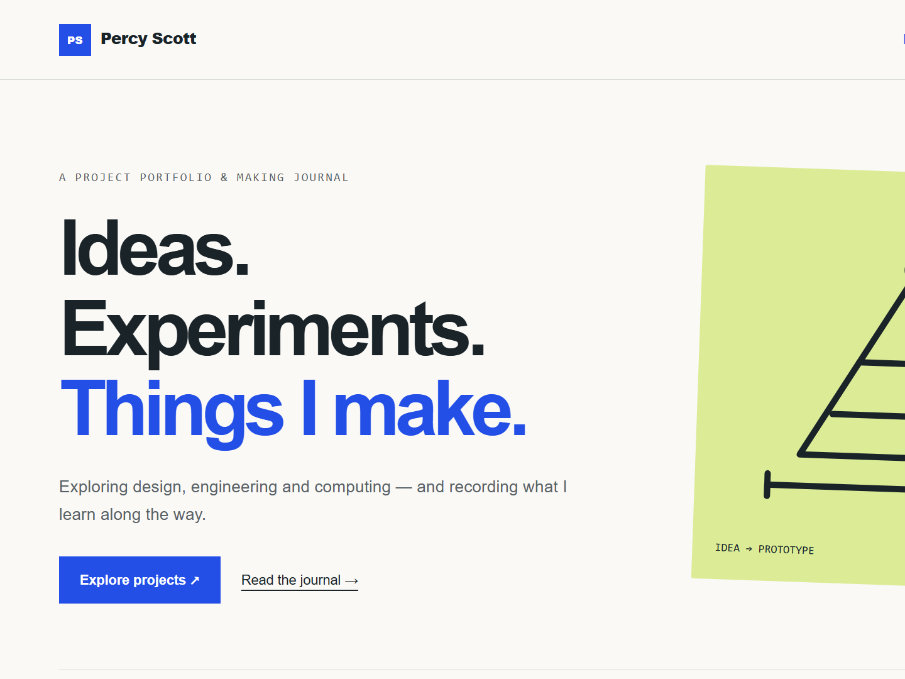

Percy Scott
Percy Scott
Computing
Website Project
This project was so that I could show my projects to my friends and family without having them to come to my house
- Status
- in progress
- Date
- 10/2026
- Tools & materials
- Computer & github

01 / The brief
What I wanted to achieve
In this project what I wanted to achieve was to have all online portfolio for all my friends and family to see. The other reason I wanted to create a website was to understand more about coding in the past I have done many other coding projects bat this is the first one that is full on coding instead of block coding.
02 / The process
How I designed and made it
Planning & Building
The planning and design process for this project turned out to be more complex than we had originally expected. What began as a simple experiment to explore website-building gradually developed into something much more ambitious: an online portfolio where I could showcase my projects, share my ideas and document my progress.
A key part of the development process was using AI to help write, improve and debug the website's code. We mainly used ChatGPT, which allowed us to turn our ideas into working features much more easily. It also helped us solve coding problems, experiment with different designs and refine the website as the project progressed.
We also explored an alternative AI website-building tool called Base44. Although it was useful for getting ideas off the ground, we found that it offered less flexibility when it came to personalising the website to match our vision. As a result, we decided to continue using ChatGPT, which gave us greater control over the design and development process.
Finally, we needed a way to publish the website online. As we do not currently have our own domain name, we chose GitHub Pages to host and publish the website. This gave us a practical way to make the portfolio publicly accessible without needing to purchase a domain or pay for separate hosting.
Overall, the planning and design process taught us that building a website involves much more than simply writing code. It requires experimentation, problem-solving and making decisions about the tools and technologies that best suit the project.
Challenges We Encountered
Throughout this project, we encountered several challenges that required patience, experimentation and problem-solving.
1. Learning to Use GitHub
One of our first major challenges was learning how to use GitHub effectively. We initially found it difficult to organise our files and images correctly and ensure that they were stored in the right locations. We also had to learn how to reference these files properly within our HTML code so that images and other resources would display correctly on the website. Over time, this helped us develop a better understanding of how website files are organised and managed.
2. Resizing and Formatting Images
Our second major challenge was getting images to the correct sizes for the website. We found that images did not always fit the layout as we had intended, and adjusting them to look consistent across the page proved more difficult than expected. This is still an area we are working to improve, particularly when trying to achieve a professional and consistent appearance throughout the website.
Overall, these challenges have helped us recognise the importance of file organisation, accurate image formatting and testing our work regularly. Although we have not solved every problem yet, each challenge has given us an opportunity to learn new skills and improve our website development process.
03 / The outcome
The result
[Explain what the project achieved and how it compares with your original goals. Include useful measurements or test results.]
04 / Reflection
What I learned
- [A skill or technique you learned]
- [A discovery from testing]
- [Something you would do differently]
What comes next?
[Describe a possible improvement, next experiment or follow-up project.]
Project journal & resources
[Optional: add links to related Ideas posts, code, design files or sources. Remove this section if it is not needed.]
Browse the project journal →